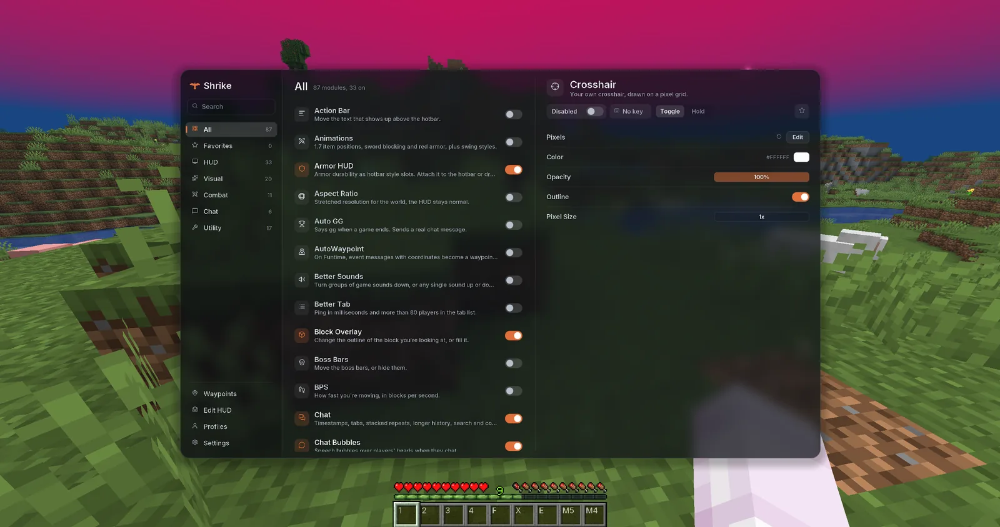
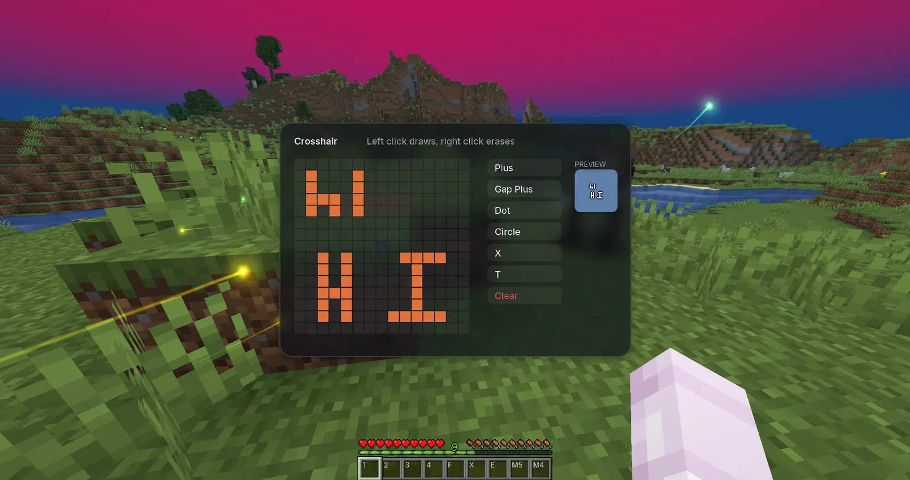
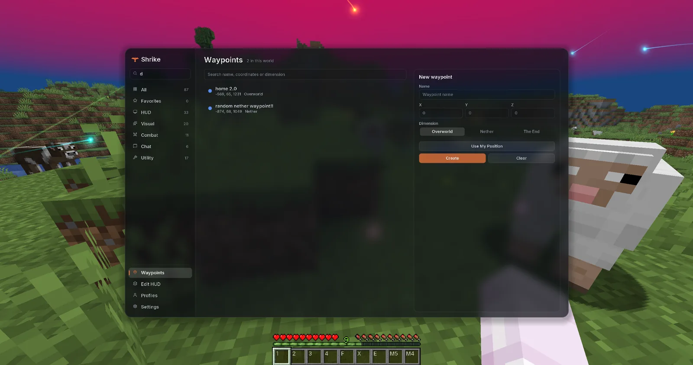
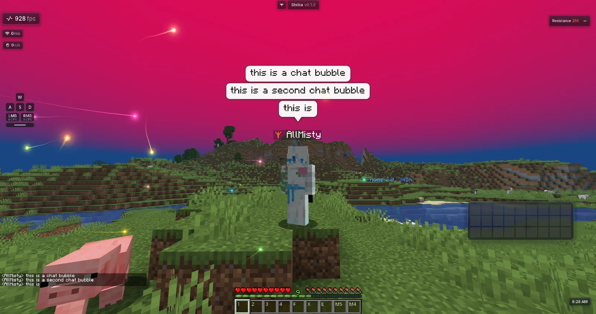
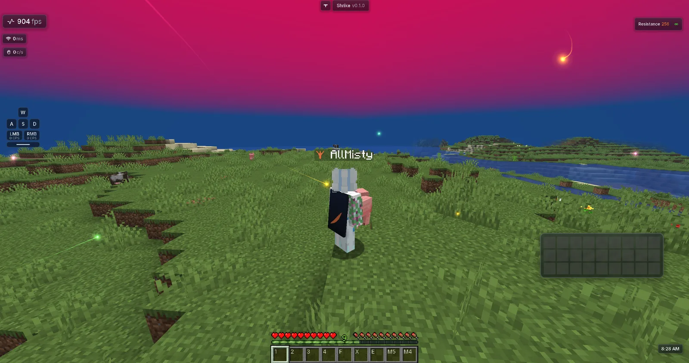

87 modules
Right Shift to open to gui, includes a search box

HUD
33 modules
- Action Bar
- Armor HUD
- Boss Bars
- BPS
- Clock
- Combo
- Compass
- Cooldown HUD
- Coordinates
- CPS
- Crosshair
- Effects
- FPS
- Hotbar Tweaks
- Inventory HUD
- Item Tracker
- Keystrokes
- Memory
- Mini Debug
- Music Player
- Pack Display
- Ping
- PvP Info
- Reach
- Saturation
- Scoreboard
- Server
- Session Timer
- Stopwatch
- Titles
- TPS
- WAILA
- Watermark
Visual
20 modules
- Animations
- Aspect Ratio
- Block Overlay
- Cosmetics
- Dropped Items
- Enchant Glint
- Fire Height
- Fireflies
- FOV Changer
- Fullbright
- Hide Armor
- Hurt Camera
- Minimal Bobbing
- Motion Blur
- NameTags
- No Render
- Particle Changer
- Screen Background
- Sky & Ambience
- Title Screen
Combat
11 modules
- Cooldowns
- Damage Numbers
- Heal Highlight
- Hit Color
- Hitboxes
- Jump Reset Coach
- Kill Effects
- Low Health
- Swap Helper
- TNT Timer
- Totem Tracker
Chat
6 modules
- Auto GG
- Chat
- Chat Bubbles
- Chat Heads
- Hide Password
- Mentions
Utility
17 modules
- AutoWaypoint
- Better Sounds
- Better Tab
- Disconnect Guard
- Freelook
- Friends
- Key Sounds
- Lock Slot
- Modern Keybinds
- Pickup Tracker
- Screenshot Helper
- Scrollable Tooltips
- Server Notes
- Shulker Preview
- Trap Timer
- Waypoints
- Zoom
Blacklisted modules
Some servers don't allow certain modules. Shrike pulls a list from relozia/pubshrike and turns off anything the server you joined doesn't allow, then tells you which ones.
Your config isn't changed. Leave that server and they come back exactly as you had them. There's no setting for it and it can't be turned off.
The list is best effort and server rules change, so read the server's own rules too.



